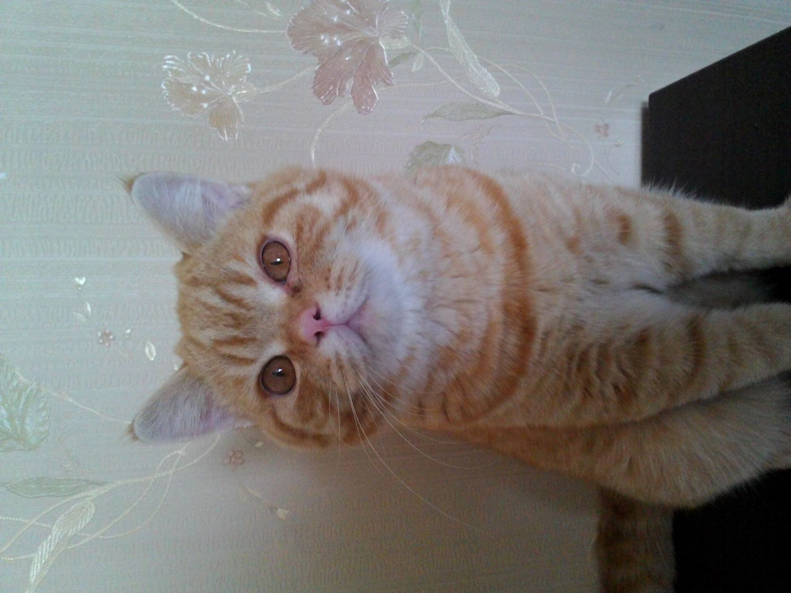
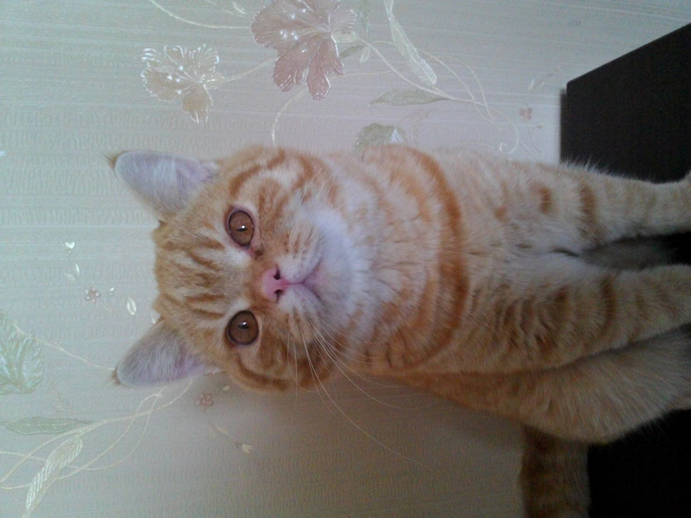
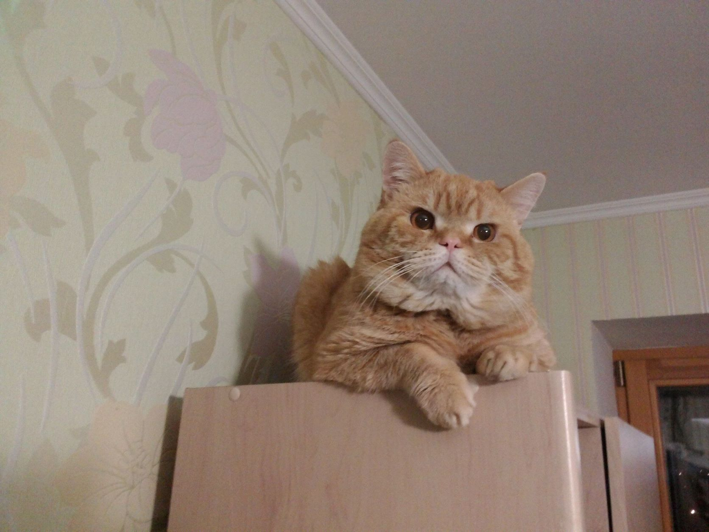
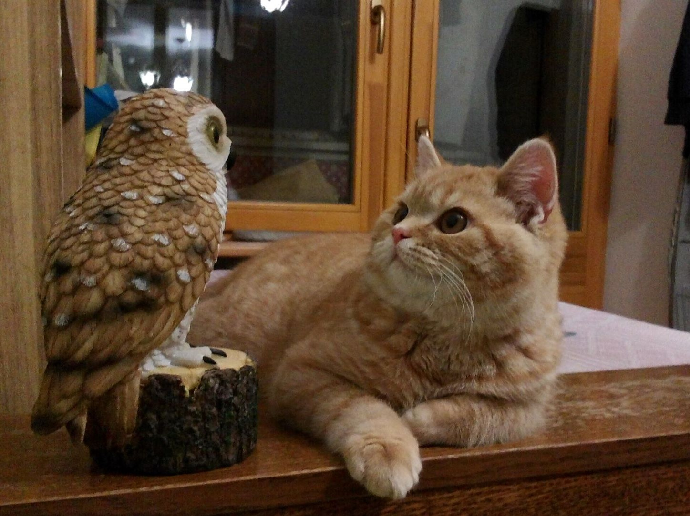

Мій улюбленець
 А ось і мій улюбленець - кіт Річард. Йому вже 8 років. Взяли ми його на початку 2014 року (а точніше 6 січня 2014 року). За котиком ми їздили аж у Славутич, бо хотіли собі породистого. Його порода - британський короткошорстий. У Річарда, до речі, ункальний колір шерсті, не властивий котам даної породи - рудий. А от колір очей, як і у справжніх "британців" - помаранчевий.
Наш кіт спокійний, але боїться чогось невідомого та не звичного йому. Так, як тільки хтось незнайомий приходить до нас, він мчить під ліжко до моєї кімнати, щоб сховатися. Не любить він і кудись переїжджати. Коли ми перевозили кота у спеціальному кошику до іншого місця проживання, він голосно кричав та виривався (одного разу, до речі, він таки вирвався з пластикового кошика під час поїздки в авто). Зате на вулиці він спокійний і ховається у траві від навколишнього світу. Навіть під час вибухів у березні 2022 року він не лякався і не ховався.
Кіт є чудовим заспокійливим засобом. Увечері, після важкого дня він може підійти, стрибнути на ліжко та посидіти біля своїх хазяїв. Але Річард ніколи не сідає на наші ноги та не лежить на них.
Звісно, як і будь-який інший кіт, Річард може шкодити, задовольняючи тим самим свої природні потреби. Так, він нерідко дряпає диван, щоб поточити свої кігті. Може він і ходити по столах у пошуках свого улюбленого корму. А так, він більшу астину дня спить.
Ось такий у мене кіт. Зараз навіть не уявляємо життя без цього пухнастика. Як же він нам подобається... За любов до нього він іноді віддячує нам своїм муркотінням.
 А ось і мій улюбленець - кіт Річард. Йому вже 8 років. Взяли ми його на початку 2014 року (а точніше 6 січня 2014 року). За котиком ми їздили аж у Славутич, бо хотіли собі породистого. Його порода - британський короткошорстий. У Річарда, до речі, ункальний колір шерсті, не властивий котам даної породи - рудий. А от колір очей, як і у справжніх "британців" - помаранчевий.
Наш кіт спокійний, але боїться чогось невідомого та не звичного йому. Так, як тільки хтось незнайомий приходить до нас, він мчить під ліжко до моєї кімнати, щоб сховатися. Не любить він і кудись переїжджати. Коли ми перевозили кота у спеціальному кошику до іншого місця проживання, він голосно кричав та виривався (одного разу, до речі, він таки вирвався з пластикового кошика під час поїздки в авто). Зате на вулиці він спокійний і ховається у траві від навколишнього світу. Навіть під час вибухів у березні 2022 року він не лякався і не ховався.
Кіт є чудовим заспокійливим засобом. Увечері, після важкого дня він може підійти, стрибнути на ліжко та посидіти біля своїх хазяїв. Але Річард ніколи не сідає на наші ноги та не лежить на них.
Звісно, як і будь-який інший кіт, Річард може шкодити, задовольняючи тим самим свої природні потреби. Так, він нерідко дряпає диван, щоб поточити свої кігті. Може він і ходити по столах у пошуках свого улюбленого корму. А так, він більшу астину дня спить.
Ось такий у мене кіт. Зараз навіть не уявляємо життя без цього пухнастика. Як же він нам подобається... За любов до нього він іноді віддячує нам своїм муркотінням.
Фотографії мого кота

